我使用的是 Win64 OpenSSL v1.1.0j 版本，
目地是在同一台機器裡，自己當 Certificate Authority (CA) 然後頒發 certificate 給自己用，作法如下。
一、Create a private key rootSSL.key
$ .\openssl genrsa -des3 -out rootSSL.key 2048
完成後會產生 rootSSL.key
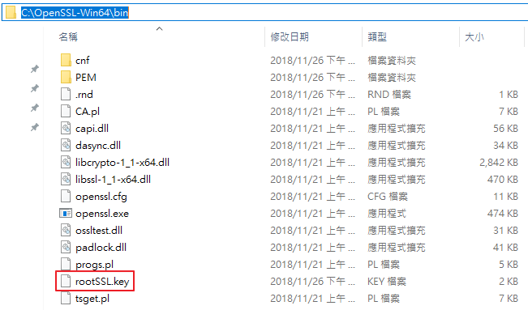
二、Create certificate rootSSL.pem file using private key rootSSL.key
$ .\openssl req -x509 -new -nodes -key rootSSL.key -sha256 -days 1024 -out rootSSL.pem
如果沒問題的話會出現要你填 Country Name...等等欄位，可參考下圖填入
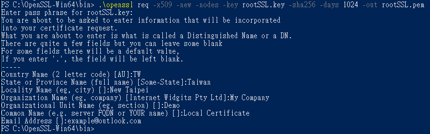
上步驟如果遇到下圖的 error
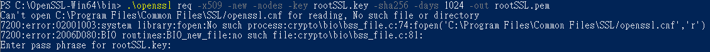
請將
C:\OpenSSL-Win64\bin\cnf\openssl.cnf 檔案
複製到
C:\Program Files\Common Files\SSL\openssl.cnf
即可
完成後會產生 rootSSL.pem
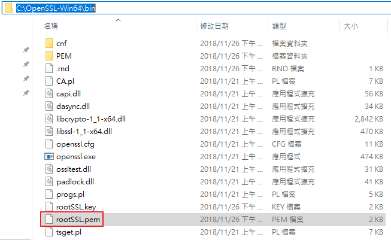
三、Do the Trust Certificate Authority (CA) on your local development machine
看圖說故事，做法如下
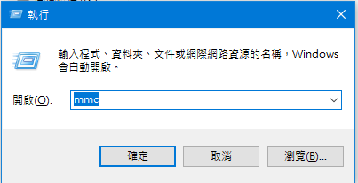
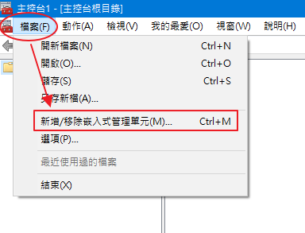
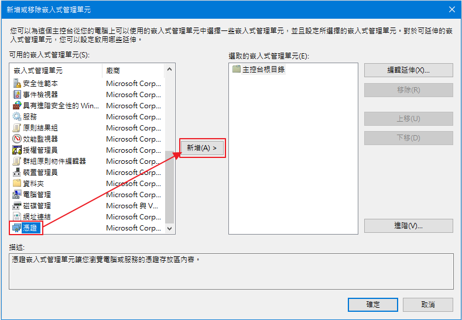
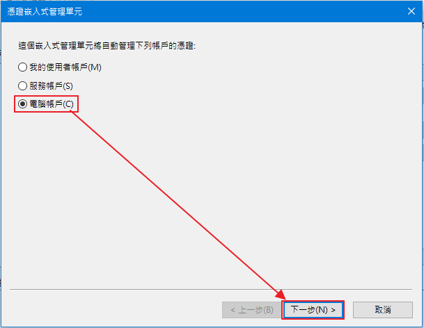
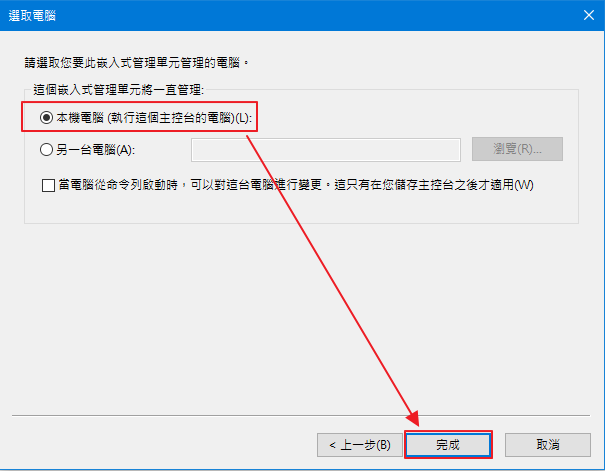

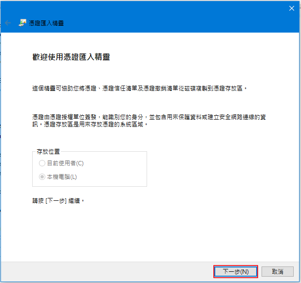
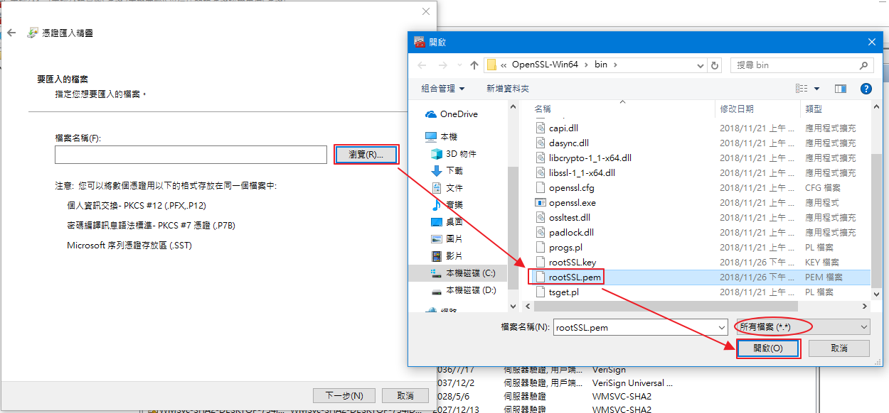
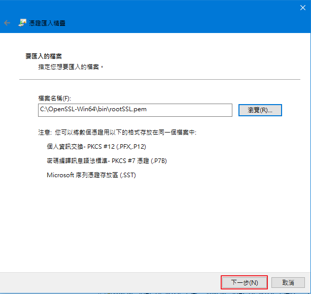

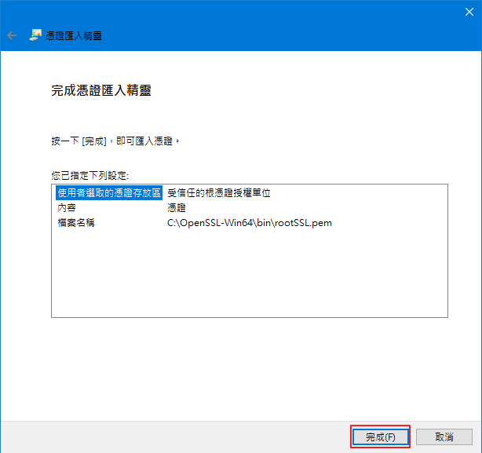
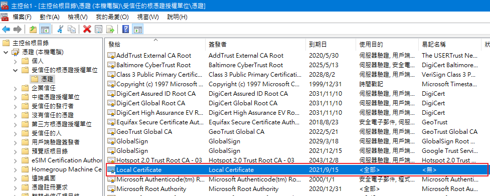
四、to issue Certificate for a local Domain
Create a private key dowebsite.zapto.org.key
$ .\openssl req -new -sha256 -nodes -out localhost.csr -newkey rsa:2048 -keyout localhost.key -subj "/C=TW/ST=Taiwan/L=New Tsipei/O=My Company/OU=Demo/CN=Local Certificate/emailAddress=example@outlook.com"
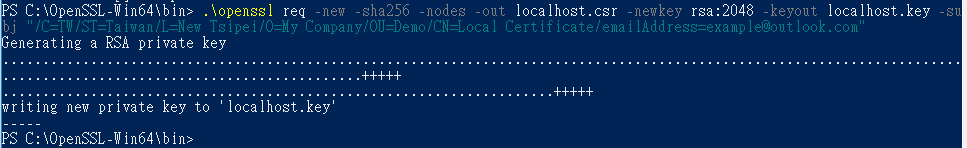
產生了 localhost.csr 與 localhost.key
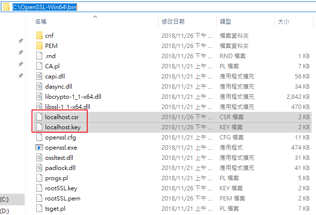
五、Create new certificate using rootSSL certificate
$ .\openssl x509 -req -in localhost.csr -CA rootSSL.pem -CAkey rootSSL.key -CAcreateserial -out localhost.crt -days 500 -sha256
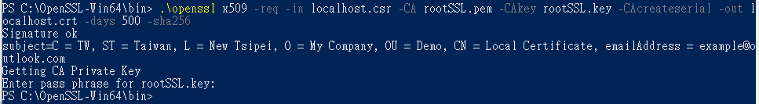
產生了 localhost.crt
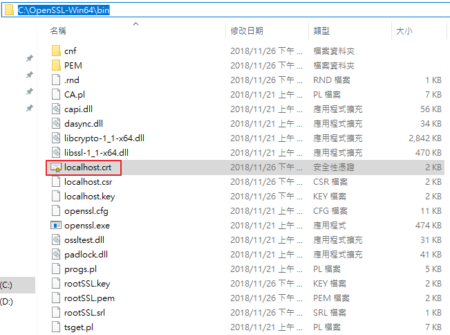
六、convert localhost.crt to localhost.pfx
$ .\openssl.exe pkcs12 -export -out localhost.pfx -inkey localhost.key -in localhost.crt
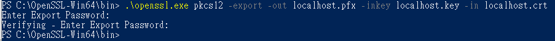
產生了 localhost.pfx
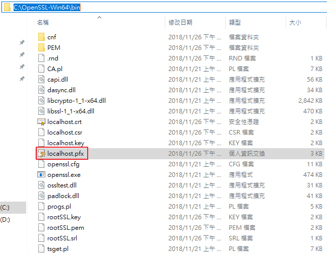
七、將 localhost.pfx 餵給 IIS，並將憑證掛載在 https://localhost 上檢視成果
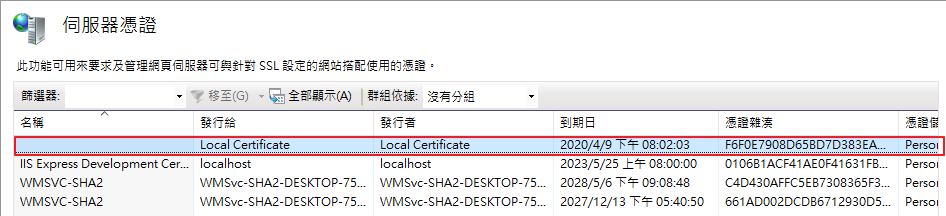
但還是失敗了

檢視憑證應該也沒什麼異狀
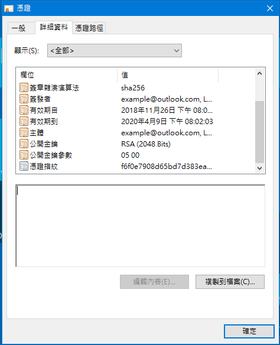
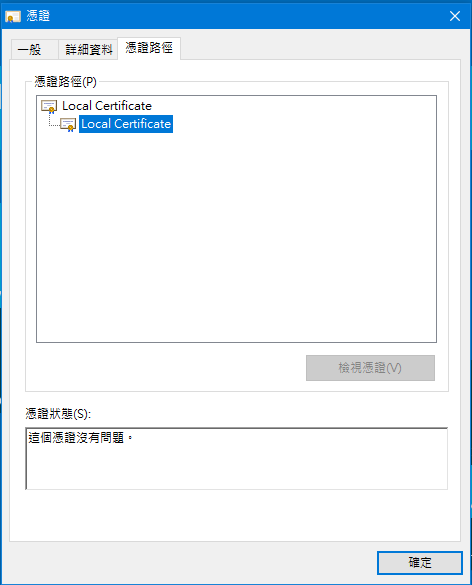
結論：
不知道問題錯在哪邊，有可能我在某步驟因觀念錯誤而出錯了吧。
不好意思浪費大家的時間，寫那麼長的文章，結論是 certificate 做失敗了。
參考資料：
How to get HTTPS working in localhost development environment
Create a .pfx/.p12 certificate file using OpenSSL
How to get HTTPS working on your local development environment in 5 minutes